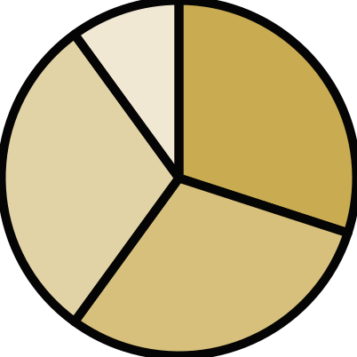
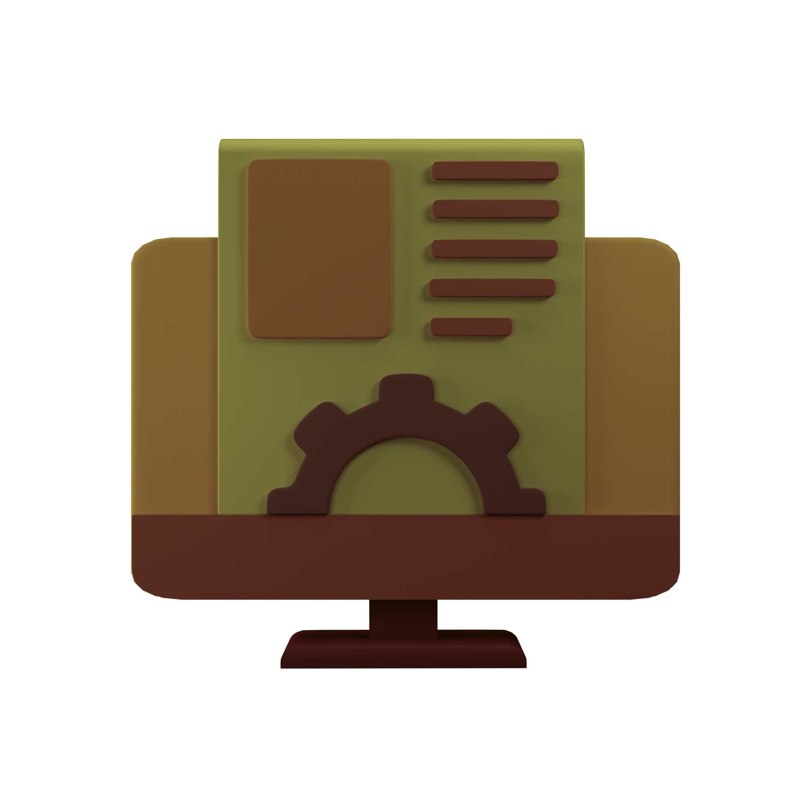

Empowering Influencers in the Web3.0
Revolutionizing social media engagement and reputation management with blockchain technology.
What is IKOL?
IKOL stands for 'I am a Key Opinion Leader'. It's a Web3.0 ecosystem designed to empower influencers by creating opportunities for engagement, reputation management, and monetization.
Exchange

Services
Educational
Staking
IKOL Token: The Backbone of the Ecosystem

Token allocations:
O Community Sale: 30%
O Liquidity Pools: 30%
O Market-Making: 30%
O Incentives / Airdrops: 10%
IKOL tokens ensure interoperability across the community and incentivize ecosystem participants.
Meet Our Partners
Applications in the IKOL Ecosystem
Influencer-Brand Marketplace
Streamline collaborations between brands and influencers.
Gamified Engagement
Reward followers and enhance community interactions.

Influencer Rating System
Build trust with KPIs based on provable metrics.
Our Journey Ahead
Q1 2025
Q2 2025
Q3 2025
Q4 2025
Q1 2026
Q1 2025
- Token Launch and Launch of Influenz Marketplace.
Be Part of the Future
Join the IKOL community today and redefine influence in the digital era.